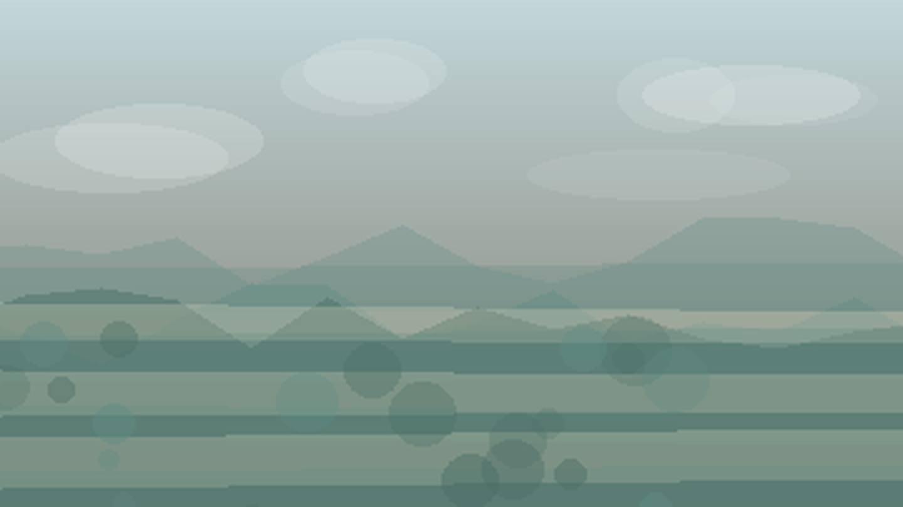

Главная / Омская область

Омская область
Что посадить
Что посадить
в Омской области
Выберите природную зону в Омской области: условия внутри региона различаются по теплу, влаге, ветру и длине сезона.
северная лесная зона: сибирский климат требует ранних сортов, но хорошо подходит для устойчивых овощей и ягодников. Ориентиры внутри зоны: Тара, Большеречье.
Открыть страницу зоны → центральная лесостепьцентральная лесостепь: сибирский климат требует ранних сортов, но хорошо подходит для устойчивых овощей и ягодников. Ориентиры внутри зоны: Омск, Калачинск.
Открыть страницу зоны → южная степьюжная степь: сибирский климат требует ранних сортов, но хорошо подходит для устойчивых овощей и ягодников. Ориентиры внутри зоны: Исилькуль, Черлак.
Открыть страницу зоны →